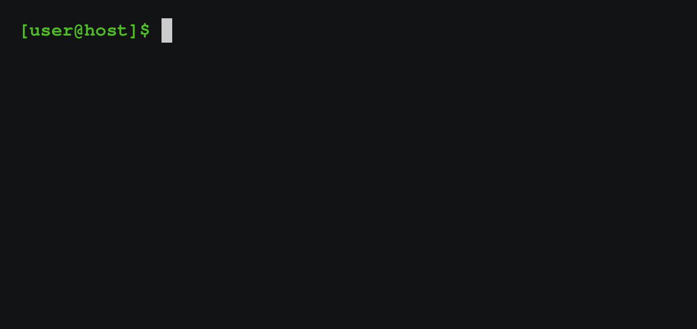

A Short Introduction To Using The (bash) Shell
pwd
Prints the path to the current working directory
ls
List files and their properties
ls -l
Long listing
ls -lh
Long listing with human readable file sizes
ls -a
List all files
cd
Change directory
cd
With no arguments will return to the home directory
mkdir
Make directories
cp
Copy files and directories
cp -r
Copy files recursively
mv
Move files and directories

rm
Remove files and directories
rm -i
Prompt for confirmation before file removal
rm -fr
Forcibly remove files recursively
rmdir
Remove empty directories

*
Matches any character
less
View the content of a file
man
Access the manual pages for a command
Recap
pwd: Prints the path to the current working directoryls: List files and their propertiescd: Change directorymkdir: Make directoriescp: Copy files and directoriesmv: Move files and directories
rm: Remove files and directoriesrmdir: Remove empty directories*: Matches any characterless: View the content of a fileman: Access the manual pages for a command